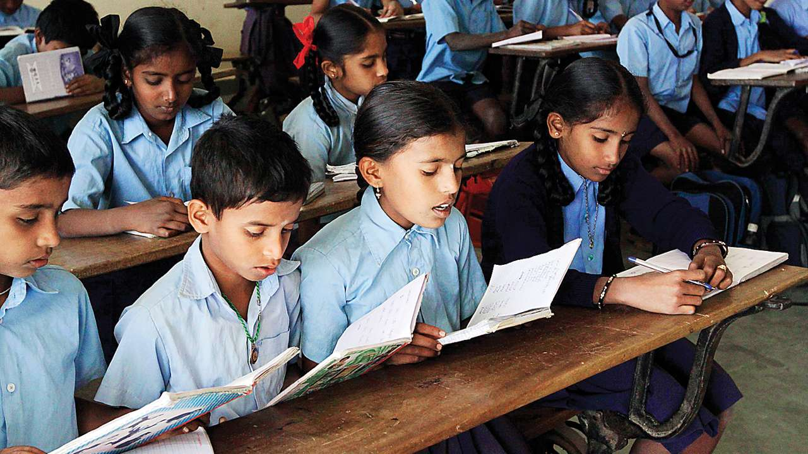
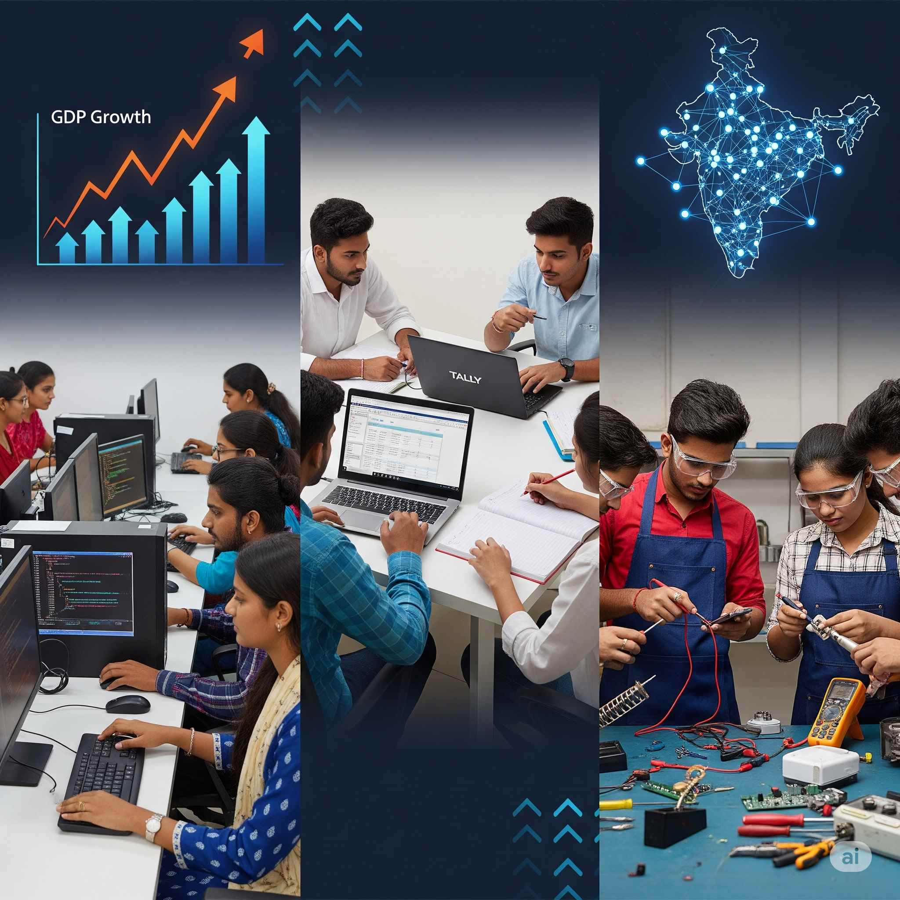

Our Focus
OUR FOCUS AREAS
TOUCHING LIVES WITH COMPASSION

Education
Healthcare

Skill Development Woman & Child Welfare
Woman & Child Welfare
 Animal Welfare
Animal Welfare
 Elderly Care
Elderly Care
Environment